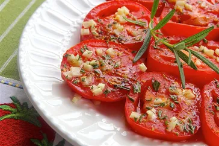

Baked Tomato Slices
Homepage

Description
Baked tomato slices are a delicious way to top leftover pasta
Ingredients
- 2 tablespoons olive oil, divided, or as needed
- 1 large tomato, cut into 1/2 inch-thick slices
- 1 spring fresh rosemary, leaves stripped and finely chopped
- 1 clove garlic, minced
- Salt and ground black pepper to taste
Directionns
- Preheat the oven to 350degrees F .Brush a baking sheet with about
1 tablespoon olive oil
- Arrange tomato slices on the baking sheet, sprinkle rosemary and garlic on top.
Brush with remaining 1 tablespoon olive oil; season with salt and pepper.
- Bake in the Preheated oven until tender, 5 to 10minutes